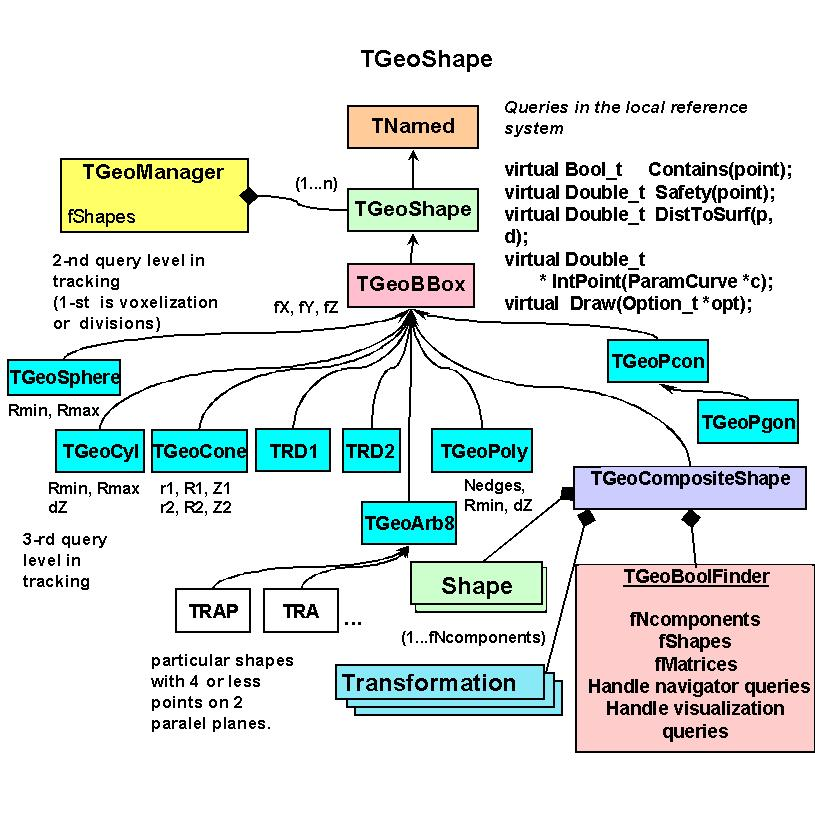
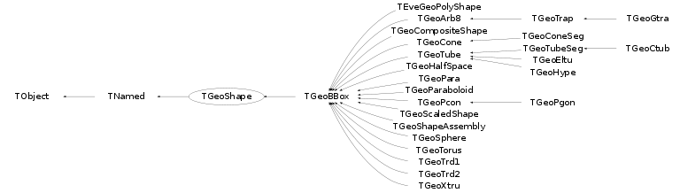

class TGeoShape: public TNamed
TGeoShape - Base abstract class for all shapes. Shapes are geometrical objects that provide the basic modelling functionality. They provide the definition of the LOCAL frame of coordinates, with respect to which they are defined. Any implementation of a shape deriving from the base TGeoShape class has to provide methods for : - finding out if a point defined in their local frame is or not contained inside; - computing the distance from a local point to getting outside/entering the shape, given a known direction; - computing the maximum distance in any direction from a local point that does NOT result in a boundary crossing of the shape (safe distance); - computing the cosines of the normal vector to the crossed shape surface, given a starting local point and an ongoing direction. All the features above are globally managed by the modeller in order to provide navigation functionality. In addition to those, shapes have also to implement additional specific abstract methods : - computation of the minimal box bounding the shape, given that this box have to be aligned with the local coordinates; - algorithms for dividing the shape along a given axis and producing resulting divisions volumes. The modeler currently provides a set of 16 basic shapes, which we will call primitives. It also provides a special class allowing the creation of shapes made as a result of boolean operations between primitives. These are called composite shapes and the composition operation can be recursive (composition of composites). This allows the creation of a quite large number of different shape topologies and combinations. Shapes are named objects and register themselves to the manager class at creation time. This is responsible for their final deletion. Shapes can be created without name if their retreival by name is no needed. Generally shapes are objects that are usefull only at geometry creation stage. The pointer to a shape is in fact needed only when referring to a given volume and it is always accessible at that level. A shape may be referenced by several volumes, therefore its deletion is not possible once volumes were defined based on it. Creating shapes Shape objects embeed only the minimum set of parameters that are fully describing a valid physical shape. For instance, a tube is represented by its half length, the minimum radius and the maximum radius. Shapes are used togeather with media in order to create volumes, which in their turn are the main components of the geometrical tree. A specific shape can be created stand-alone : TGeoBBox *box = new TGeoBBox("s_box", halfX, halfY, halfZ); // named TGeoTube *tub = new TGeoTube(rmin, rmax, halfZ); // no name ... (see each specific shape constructors) Sometimes it is much easier to create a volume having a given shape in one step, since shapes are not direcly linked in the geometrical tree but volumes are : TGeoVolume *vol_box = gGeoManager->MakeBox("BOX_VOL", "mat1", halfX, halfY, halfZ); TGeoVolume *vol_tub = gGeoManager->MakeTube("TUB_VOL", "mat2", rmin, rmax, halfZ); ... (see MakeXXX() utilities in TGeoManager class) Shape queries Note that global queries related to a geometry are handled by the manager class. However, shape-related queries might be sometimes usefull. A) Bool_t TGeoShape::Contains(Double_t *point[3]) - this method returns true if POINT is actually inside the shape. The point has to be defined in the local shape reference. For instance, for a box having DX, DY and DZ half-lengths a point will be considered inside if : | -DX <= point[0] <= DX | -DY <= point[1] <= DY | -DZ <= point[2] <= DZ B) Double_t TGeoShape::DistFromInside(Double_t *point[3], Double_t *dir[3], Int_t iact, Double_t step, Double_t *safe) - computes the distance to exiting a shape from a given point INSIDE, along a given direction. The direction is given by its director cosines with respect to the local shape coordinate system. This method provides additional information according the value of IACT input parameter : IACT = 0 => compute only safe distance and fill it at the location given by SAFE IACT = 1 => a proposed STEP is supplied. The safe distance is computed first. If this is bigger than STEP than the proposed step is approved and returned by the method since it does not cross the shape boundaries. Otherwise, the distance to exiting the shape is computed and returned. IACT = 2 => compute both safe distance and distance to exiting, ignoring the proposed step. IACT > 2 => compute only the distance to exiting, ignoring anything else. C) Double_t TGeoShape::DistFromOutside(Double_t *point[3], Double_t *dir[3], Int_t iact, Double_t step, Double_t *safe) - computes the distance to entering a shape from a given point OUTSIDE. Acts in the same way as B). D) Double_t Safety(Double_t *point[3], Bool_t inside) - compute maximum shift of a point in any direction that does not change its INSIDE/OUTSIDE state (does not cross shape boundaries). The state of the point have to be properly supplied. E) Double_t *Normal(Double_t *point[3], Double_t *dir[3], Bool_t inside) - returns director cosines of normal to the crossed shape surface from a given point towards a direction. One has to specify if the point is inside or outside shape. According to this, the normal will be outwards or inwards shape respectively. Normal components are statically stored by shape class, so it has to be copied after retreival in a different array. Dividing shapes Shapes can generally be divided along a given axis. Supported axis are X, Y, Z, Rxy, Phi, Rxyz. A given shape cannot be divided however on any axis. The general rule is that that divisions are possible on whatever axis that produces still known shapes as slices. The division of shapes should not be performed by TGeoShape::Divide() calls, but rather by TGeoVolume::Divide(). The algorithm for dividing a specific shape is known by the shape object, but is always invoked in a generic way from the volume level. Details on how to do that can be found in TGeoVolume class. One can see how all division options are interpreted and which is their result inside specific shape classes./*  */
Function Members (Methods)
This is an abstract class, constructors will not be documented.
Look at the header to check for available constructors.
public:
| virtual | ~TGeoShape() |
| void | TObject::AbstractMethod(const char* method) const |
| virtual void | TObject::AppendPad(Option_t* option = "") |
| static Double_t | Big() |
| virtual void | TObject::Browse(TBrowser* b) |
| virtual Double_t | Capacity() const |
| void | CheckShape(Int_t testNo, Int_t nsamples = 10000, Option_t* option = "") |
| static TClass* | Class() |
| virtual const char* | TObject::ClassName() const |
| virtual void | TNamed::Clear(Option_t* option = "") |
| virtual void | ClearThreadData() const |
| virtual TObject* | TNamed::Clone(const char* newname = "") const |
| virtual Int_t | TNamed::Compare(const TObject* obj) const |
| virtual void | ComputeBBox() |
| static Double_t | ComputeEpsMch() |
| virtual void | ComputeNormal(Double_t* point, Double_t* dir, Double_t* norm) |
| virtual Bool_t | Contains(Double_t* point) const |
| virtual void | TNamed::Copy(TObject& named) const |
| virtual Bool_t | CouldBeCrossed(Double_t* point, Double_t* dir) const |
| virtual void | TObject::Delete(Option_t* option = "")MENU |
| virtual Int_t | DistancetoPrimitive(Int_t px, Int_t py) |
| virtual Double_t | DistFromInside(Double_t* point, Double_t* dir, Int_t iact = 1, Double_t step = TGeoShape::Big(), Double_t* safe = 0) const |
| virtual Double_t | DistFromOutside(Double_t* point, Double_t* dir, Int_t iact = 1, Double_t step = TGeoShape::Big(), Double_t* safe = 0) const |
| static Double_t | DistToPhiMin(Double_t* point, Double_t* dir, Double_t s1, Double_t c1, Double_t s2, Double_t c2, Double_t sm, Double_t cm, Bool_t in = kTRUE) |
| virtual TGeoVolume* | Divide(TGeoVolume* voldiv, const char* divname, Int_t iaxis, Int_t ndiv, Double_t start, Double_t step) |
| virtual void | Draw(Option_t* option = "")MENU |
| virtual void | TObject::DrawClass() constMENU |
| virtual TObject* | TObject::DrawClone(Option_t* option = "") constMENU |
| virtual void | TObject::Dump() constMENU |
| static Double_t | EpsMch() |
| virtual void | TObject::Error(const char* method, const char* msgfmt) const |
| virtual void | TObject::Execute(const char* method, const char* params, Int_t* error = 0) |
| virtual void | TObject::Execute(TMethod* method, TObjArray* params, Int_t* error = 0) |
| virtual void | ExecuteEvent(Int_t event, Int_t px, Int_t py) |
| virtual void | TObject::Fatal(const char* method, const char* msgfmt) const |
| virtual void | TNamed::FillBuffer(char*& buffer) |
| virtual TObject* | TObject::FindObject(const char* name) const |
| virtual TObject* | TObject::FindObject(const TObject* obj) const |
| virtual const char* | GetAxisName(Int_t iaxis) const |
| virtual Double_t | GetAxisRange(Int_t iaxis, Double_t& xlo, Double_t& xhi) const |
| virtual void | GetBoundingCylinder(Double_t* param) const |
| virtual const TBuffer3D& | GetBuffer3D(Int_t reqSections, Bool_t localFrame) const |
| virtual Int_t | GetByteCount() const |
| virtual Option_t* | TObject::GetDrawOption() const |
| static Long_t | TObject::GetDtorOnly() |
| virtual Int_t | GetFittingBox(const TGeoBBox* parambox, TGeoMatrix* mat, Double_t& dx, Double_t& dy, Double_t& dz) const |
| virtual const char* | TObject::GetIconName() const |
| Int_t | GetId() const |
| virtual TGeoShape* | GetMakeRuntimeShape(TGeoShape* mother, TGeoMatrix* mat) const |
| virtual void | GetMeshNumbers(Int_t&, Int_t&, Int_t&) const |
| virtual const char* | GetName() const |
| virtual Int_t | GetNmeshVertices() const |
| virtual char* | TObject::GetObjectInfo(Int_t px, Int_t py) const |
| static Bool_t | TObject::GetObjectStat() |
| virtual Option_t* | TObject::GetOption() const |
| const char* | GetPointerName() const |
| virtual Bool_t | GetPointsOnSegments(Int_t npoints, Double_t* array) const |
| virtual const char* | TNamed::GetTitle() const |
| static TGeoMatrix* | GetTransform() |
| virtual UInt_t | TObject::GetUniqueID() const |
| virtual Bool_t | TObject::HandleTimer(TTimer* timer) |
| virtual ULong_t | TNamed::Hash() const |
| virtual void | TObject::Info(const char* method, const char* msgfmt) const |
| virtual Bool_t | TObject::InheritsFrom(const char* classname) const |
| virtual Bool_t | TObject::InheritsFrom(const TClass* cl) const |
| virtual void | TObject::Inspect() constMENU |
| virtual void | InspectShape() const |
| void | TObject::InvertBit(UInt_t f) |
| void | InvertShapeBit(UInt_t f) |
| virtual TClass* | IsA() const |
| virtual Bool_t | IsAssembly() const |
| static Bool_t | IsCloseToPhi(Double_t epsil, Double_t* point, Double_t c1, Double_t s1, Double_t c2, Double_t s2) |
| virtual Bool_t | IsComposite() const |
| static Bool_t | IsCrossingSemiplane(Double_t* point, Double_t* dir, Double_t cphi, Double_t sphi, Double_t& snext, Double_t& rxy) |
| virtual Bool_t | IsCylType() const |
| virtual Bool_t | TObject::IsEqual(const TObject* obj) const |
| virtual Bool_t | TObject::IsFolder() const |
| static Bool_t | IsInPhiRange(Double_t* point, Double_t phi1, Double_t phi2) |
| Bool_t | TObject::IsOnHeap() const |
| virtual Bool_t | IsReflected() const |
| Bool_t | IsRunTimeShape() const |
| static Bool_t | IsSameWithinTolerance(Double_t a, Double_t b) |
| static Bool_t | IsSegCrossing(Double_t x1, Double_t y1, Double_t x2, Double_t y2, Double_t x3, Double_t y3, Double_t x4, Double_t y4) |
| virtual Bool_t | TNamed::IsSortable() const |
| Bool_t | IsValid() const |
| virtual Bool_t | IsValidBox() const |
| Bool_t | TObject::IsZombie() const |
| virtual void | TNamed::ls(Option_t* option = "") const |
| virtual TBuffer3D* | MakeBuffer3D() const |
| void | TObject::MayNotUse(const char* method) const |
| static void | NormalPhi(Double_t* point, Double_t* dir, Double_t* norm, Double_t c1, Double_t s1, Double_t c2, Double_t s2) |
| virtual Bool_t | TObject::Notify() |
| void | TObject::Obsolete(const char* method, const char* asOfVers, const char* removedFromVers) const |
| static void | TObject::operator delete(void* ptr) |
| static void | TObject::operator delete(void* ptr, void* vp) |
| static void | TObject::operator delete[](void* ptr) |
| static void | TObject::operator delete[](void* ptr, void* vp) |
| void* | TObject::operator new(size_t sz) |
| void* | TObject::operator new(size_t sz, void* vp) |
| void* | TObject::operator new[](size_t sz) |
| void* | TObject::operator new[](size_t sz, void* vp) |
| TGeoShape& | operator=(const TGeoShape&) |
| virtual void | Paint(Option_t* option = "") |
| virtual void | TObject::Pop() |
| virtual void | TNamed::Print(Option_t* option = "") const |
| virtual Int_t | TObject::Read(const char* name) |
| virtual void | TObject::RecursiveRemove(TObject* obj) |
| void | TObject::ResetBit(UInt_t f) |
| void | ResetShapeBit(UInt_t f) |
| virtual Double_t | Safety(Double_t* point, Bool_t in = kTRUE) const |
| static Double_t | SafetyPhi(Double_t* point, Bool_t in, Double_t phi1, Double_t phi2) |
| virtual void | TObject::SaveAs(const char* filename = "", Option_t* option = "") constMENU |
| virtual void | TObject::SavePrimitive(ostream& out, Option_t* option = "") |
| void | TObject::SetBit(UInt_t f) |
| void | TObject::SetBit(UInt_t f, Bool_t set) |
| virtual void | SetDimensions(Double_t* param) |
| virtual void | TObject::SetDrawOption(Option_t* option = "")MENU |
| static void | TObject::SetDtorOnly(void* obj) |
| void | SetId(Int_t id) |
| virtual void | TNamed::SetName(const char* name)MENU |
| virtual void | TNamed::SetNameTitle(const char* name, const char* title) |
| static void | TObject::SetObjectStat(Bool_t stat) |
| virtual void | SetPoints(Double_t* points) const |
| virtual void | SetPoints(Float_t* points) const |
| void | SetRuntime(Bool_t flag = kTRUE) |
| virtual void | SetSegsAndPols(TBuffer3D& buff) const |
| void | SetShapeBit(UInt_t f) |
| void | SetShapeBit(UInt_t f, Bool_t set) |
| virtual void | TNamed::SetTitle(const char* title = "")MENU |
| static void | SetTransform(TGeoMatrix* matrix) |
| virtual void | TObject::SetUniqueID(UInt_t uid) |
| Int_t | ShapeDistancetoPrimitive(Int_t numpoints, Int_t px, Int_t py) const |
| virtual void | ShowMembers(TMemberInspector& insp) |
| virtual Int_t | TNamed::Sizeof() const |
| virtual void | Sizeof3D() const |
| virtual void | Streamer(TBuffer& b) |
| void | StreamerNVirtual(TBuffer& b) |
| virtual void | TObject::SysError(const char* method, const char* msgfmt) const |
| Bool_t | TObject::TestBit(UInt_t f) const |
| Int_t | TObject::TestBits(UInt_t f) const |
| Bool_t | TestShapeBit(UInt_t f) const |
| Int_t | TestShapeBits(UInt_t f) const |
| static Double_t | Tolerance() |
| virtual void | TObject::UseCurrentStyle() |
| virtual void | TObject::Warning(const char* method, const char* msgfmt) const |
| virtual Int_t | TObject::Write(const char* name = 0, Int_t option = 0, Int_t bufsize = 0) |
| virtual Int_t | TObject::Write(const char* name = 0, Int_t option = 0, Int_t bufsize = 0) const |
protected:
| virtual void | TObject::DoError(int level, const char* location, const char* fmt, va_list va) const |
| virtual void | FillBuffer3D(TBuffer3D& buffer, Int_t reqSections, Bool_t localFrame) const |
| Int_t | GetBasicColor() const |
| void | TObject::MakeZombie() |
| void | SetOnBoundary(Bool_t) |
| void | TransformPoints(Double_t* points, UInt_t NbPoints) const |
Data Members
public:
| enum EShapeType { | kBitMask32 | |
| kGeoNoShape | ||
| kGeoBad | ||
| kGeoRSeg | ||
| kGeoPhiSeg | ||
| kGeoThetaSeg | ||
| kGeoVisX | ||
| kGeoVisY | ||
| kGeoVisZ | ||
| kGeoRunTimeShape | ||
| kGeoInvalidShape | ||
| kGeoTorus | ||
| kGeoBox | ||
| kGeoPara | ||
| kGeoSph | ||
| kGeoTube | ||
| kGeoTubeSeg | ||
| kGeoCone | ||
| kGeoConeSeg | ||
| kGeoPcon | ||
| kGeoPgon | ||
| kGeoArb8 | ||
| kGeoEltu | ||
| kGeoTrap | ||
| kGeoCtub | ||
| kGeoTrd1 | ||
| kGeoTrd2 | ||
| kGeoComb | ||
| kGeoClosedShape | ||
| kGeoXtru | ||
| kGeoParaboloid | ||
| kGeoHalfSpace | ||
| kGeoHype | ||
| kGeoSavePrimitive | ||
| }; | ||
| enum TObject::EStatusBits { | kCanDelete | |
| kMustCleanup | ||
| kObjInCanvas | ||
| kIsReferenced | ||
| kHasUUID | ||
| kCannotPick | ||
| kNoContextMenu | ||
| kInvalidObject | ||
| }; | ||
| enum TObject::[unnamed] { | kIsOnHeap | |
| kNotDeleted | ||
| kZombie | ||
| kBitMask | ||
| kSingleKey | ||
| kOverwrite | ||
| kWriteDelete | ||
| }; |
protected:
| TString | TNamed::fName | object identifier |
| UInt_t | fShapeBits | shape bits |
| Int_t | fShapeId | shape id |
| TString | TNamed::fTitle | object title |
private:
| static Double_t | fgEpsMch | Machine round-off error |
| static TGeoMatrix* | fgTransform | current transformation matrix that applies to shape |
Class Charts
{kind=link}
{kind=link}
{kind=link}
{kind=link}

Function documentation
void CheckShape(Int_t testNo, Int_t nsamples = 10000, Option_t* option = "")
Test for shape navigation methods. Summary for test numbers: 1: DistFromInside/Outside. Sample points inside the shape. Generate directions randomly in cos(theta). Compute DistFromInside and move the point with bigger distance. Compute DistFromOutside back from new point. Plot d-(d1+d2)
Double_t ComputeEpsMch()
Compute machine round-off double precision error as the smallest number that if added to 1.0 is different than 1.0.
Int_t ShapeDistancetoPrimitive(Int_t numpoints, Int_t px, Int_t py) const
Returns distance to shape primitive mesh.
Bool_t IsCloseToPhi(Double_t epsil, Double_t* point, Double_t c1, Double_t s1, Double_t c2, Double_t s2)
True if point is closer than epsil to one of the phi planes defined by c1,s1 or c2,s2
Bool_t IsInPhiRange(Double_t* point, Double_t phi1, Double_t phi2)
Static method to check if a point is in the phi range (phi1, phi2) [degrees]
Bool_t IsCrossingSemiplane(Double_t* point, Double_t* dir, Double_t cphi, Double_t sphi, Double_t& snext, Double_t& rxy)
Compute distance from POINT to semiplane defined by PHI angle along DIR. Computes also radius at crossing point. This might be negative in case the crossing is on the other side of the semiplane.
Bool_t IsSameWithinTolerance(Double_t a, Double_t b)
Check if two numbers differ with less than a tolerance.
Bool_t IsSegCrossing(Double_t x1, Double_t y1, Double_t x2, Double_t y2, Double_t x3, Double_t y3, Double_t x4, Double_t y4)
Check if segments (A,B) and (C,D) are crossing, where: A(x1,y1), B(x2,y2), C(x3,y3), D(x4,y4)
Double_t DistToPhiMin(Double_t* point, Double_t* dir, Double_t s1, Double_t c1, Double_t s2, Double_t c2, Double_t sm, Double_t cm, Bool_t in = kTRUE)
compute distance from point (inside phi) to both phi planes. Return minimum.
void NormalPhi(Double_t* point, Double_t* dir, Double_t* norm, Double_t c1, Double_t s1, Double_t c2, Double_t s2)
Static method to compute normal to phi planes.
Double_t SafetyPhi(Double_t* point, Bool_t in, Double_t phi1, Double_t phi2)
Static method to compute safety w.r.t a phi corner defined by cosines/sines of the angles phi1, phi2.
void TransformPoints(Double_t* points, UInt_t NbPoints) const
Tranform a set of points (LocalToMaster)
void FillBuffer3D(TBuffer3D& buffer, Int_t reqSections, Bool_t localFrame) const
Fill the supplied buffer, with sections in desired frame See TBuffer3D.h for explanation of sections, frame etc.
const TBuffer3D & GetBuffer3D(Int_t reqSections, Bool_t localFrame) const
Stub implementation to avoid forcing implementation at this stage
void ComputeBBox()
void ComputeNormal(Double_t* point, Double_t* dir, Double_t* norm)
Bool_t CouldBeCrossed(Double_t* point, Double_t* dir) const
Int_t DistancetoPrimitive(Int_t px, Int_t py)
Double_t DistFromInside(Double_t* point, Double_t* dir, Int_t iact = 1, Double_t step = TGeoShape::Big(), Double_t* safe = 0) const
TGeoVolume * Divide(TGeoVolume* voldiv, const char* divname, Int_t iaxis, Int_t ndiv, Double_t start, Double_t step)
const char * GetAxisName(Int_t iaxis) const
Double_t GetAxisRange(Int_t iaxis, Double_t& xlo, Double_t& xhi) const
void GetBoundingCylinder(Double_t* param) const
Int_t GetByteCount() const
Bool_t GetPointsOnSegments(Int_t npoints, Double_t* array) const
Int_t GetFittingBox(const TGeoBBox* parambox, TGeoMatrix* mat, Double_t& dx, Double_t& dy, Double_t& dz) const
TGeoShape * GetMakeRuntimeShape(TGeoShape* mother, TGeoMatrix* mat) const
Bool_t IsValidBox() const
void InspectShape() const
void SetDimensions(Double_t* param)
void SetSegsAndPols(TBuffer3D& buff) const
void Sizeof3D() const